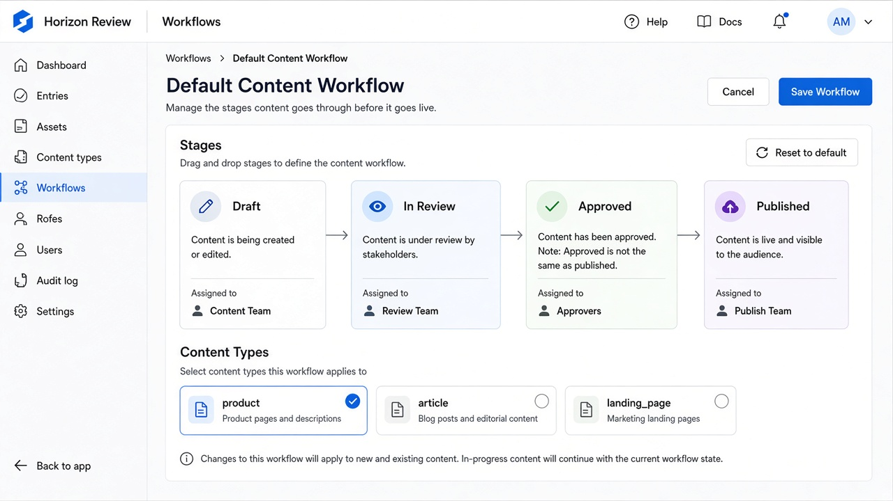
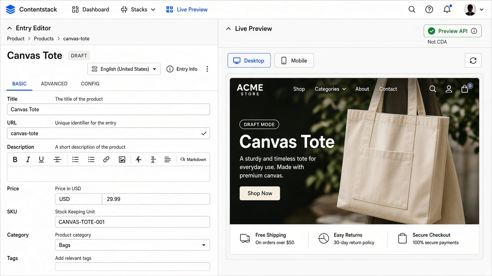

Home / Labs / 05
Lab 05 — Workflow, roles, and preview
Time: 60 minutes
Layer: CMS + Preview
Exit: You can separate workflow stage from publish, and draft from CDA.

---
1. Workflow happy path
If Horizon Review is assigned to product:
- Create product
[QA-FIXTURE] Canvas Tote, SKUHM-TOTE-001, slugcanvas-tote, category Apparel. Save. - Stage should be Draft. Staging CDA query for slug
canvas-tote→ 0 entries. - Send to In Review. Still not on CDA.
- Move to Approved. Still not on CDA unless a rule auto-publishes (note it if it does — that is a project decision to test).
- Publish to staging only.
- Staging CDA returns the tote.
Record: stage at each step vs CDA count.
---
2. Role negatives (skip if you are only Admin)
Log in as HM Author (or equivalent):
| Attempt | Expected |
|---|---|
| Publish tote to production | Denied |
| Edit a production-published legal entry (if you created one) | Denied if field/role restricted |
Log in as HM Translator FR:
| Attempt | Expected |
|---|---|
Edit en-us title | Denied |
Edit fr-fr title | Allowed |
File any mismatch as a role defect with role name + permission screenshot.
---

3. Preview vs CDA
- As QA/Admin, change tote title to
Canvas Tote — DRAFTand Save. - Staging CDA still shows the previous published title.
- Preview API (preview host +
preview_tokenheader) or Live Preview showsCanvas Tote — DRAFT. - Publish to staging. CDA catches up.
If Live Preview is not wired to an app, Postman against Preview API is enough for this lab.
Preview REST pattern (region-specific host):
GET {PREVIEW_HOST}/v3/content_types/product/entries/{UID}
?environment=staging
&locale=en-usHeaders: api_key, preview_token.
---
4. Publish rules
If you configured “production only from Approved”:
- Set tote to In Review.
- Attempt production publish.
- Expected: blocked.
- Approve, then production publish should work — immediately unpublish from production so labs stay clean.
---
Pass
- Table of stage vs CDA for tote
- Draft title not on CDA
- At least one role negative attempted or explicitly skipped with reason
- Production left clean (tote unpublished from production)
---
Next: Lab 06 — Localization